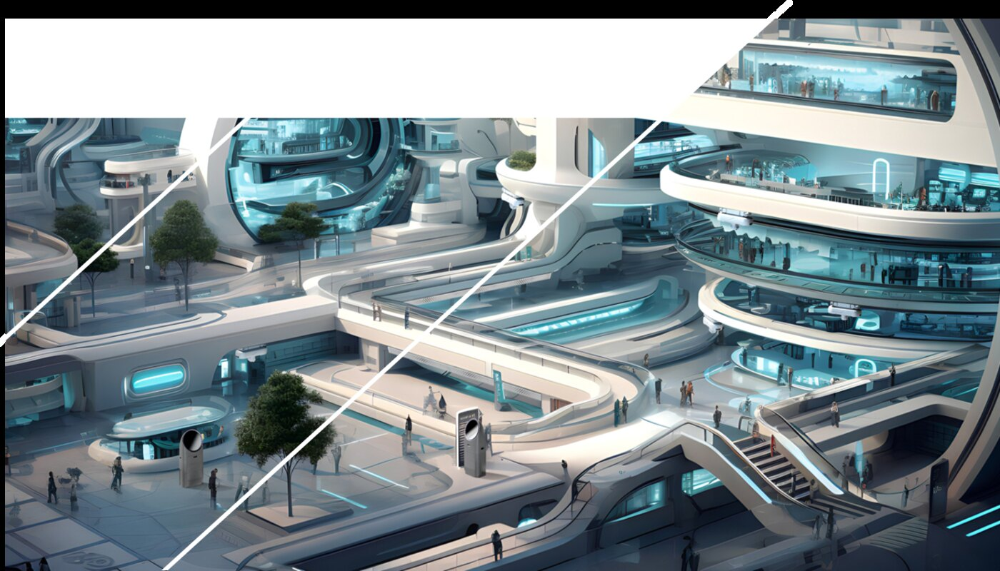
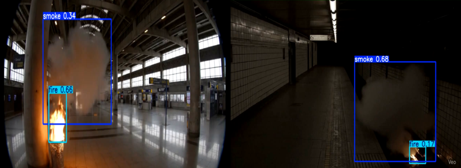
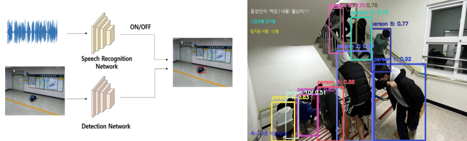
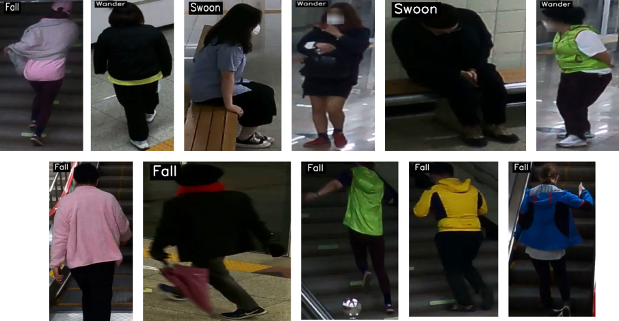

화재 재난 대응을 위한 요구조자 탐지 기술 개발
대심도 철도시설(GTX 등) 화재 재난 상황에서 영상·음성을 융합해 요구조자를 탐지하고, 위치·상태·인원을 실시간으로 파악하는 인공지능 인지 기술 개발. 기술조사·설계(2023) → 탐지 기술 개발(2024) → 통합 파이프라인 고도화(2025)로 이어진 다년도 연구.
Overview
본 과제는 국토교통부 「대심도 장대터널(GTX 등) 재난 대응 복합훈련장 개발 사업」의 핵심분야로, 한국철도기술연구원이 주관하고 한국기계연구원(KIMM)이 「화재 및 요구조자 인지기술 개발」 세부([1-1])를 담당한다. 지하 깊은 곳에 위치한 대심도 철도시설은 화재·연기·정전 등 재난 발생 시 대피와 구조가 매우 어렵기 때문에, 재난 상황에서 이용자의 위치·상태·특성을 실시간으로 파악해 신속한 구조를 지원하는 요구조자 인지 기술이 필수적이다. 특히 연기·암전·객체 가려짐처럼 영상 조건이 극도로 열악한 환경에서도 안정적으로 사람을 탐지하는 것을 목표로 한다.
연구는 연도별로 단계적으로 진행되었다. 2023년(1차년도)에는 사람 탐지와 대규모 군중 수 계산 분야의 최신 기술(CNN·Transformer 계열)과 RGB·IR(Thermal) 데이터셋을 폭넓게 조사·분석하고 인지 기술의 전체 설계 방향을 수립했다. 2024년(2차년도)에는 조사 결과를 바탕으로 RGB/IR 카메라 영상을 활용한 이용자 검출 멀티모달 알고리즘과 저조도 환경 객체 인식 알고리즘을 개발·검증했다. 2025년(3차년도)에는 화재 인지와 요구조자 탐지를 하나로 묶은 통합 파이프라인을 구축하고, 음성 기반 멀티모달 탐지, 요구조자 상태 인식, 거리 추정, 인원 카운팅 등으로 기술을 고도화했다.

Approach
- 기술조사·설계 (2023) — 사람 탐지(YOLO 계열·DETR 계열 등)와 대규모 군중 수 계산 기법을 CNN/Transformer 구조로 분류 조사하고, RGB 및 RGB-IR(Thermal) 데이터셋을 정리해 재난 환경 일반화 방향 설계.
- 저조도·악조건 탐지 (2024 → 2025) — 연기·암전·저대비 환경에서의 고신뢰 사람 탐지를 위해 실시간 탐지 모델(YOLO 계열)을 저조도 전용 데이터셋으로 학습·평가.
- 화재 및 요구조자 탐지 통합 파이프라인 (2025) — 평시(인원 카운팅·추적)와 화재 발생 시(화재 판단 → 알림 → 요구조자 탐지 → 상태 판별 → 거리 추정)로 동작하는 통합 SW 설계.
- 음성 기반 멀티모달 요구조자 탐지 — 음성 인식(Whisper)으로 긴급 키워드를 감지해 영상 분석을 보조함으로써, 시각적으로 가려진 요구조자까지 탐지.
- 요구조자 상태 인식 — 영상 기반 행동 인식(MVD 등)으로 실신·전도·배회 등 상태를 판별하여 기존 객체 탐지의 자세 오탐 문제를 보완.
- 실내 거리(위치) 추정 — 세그멘테이션(SAM)과 단안 깊이 추정(DepthPro)을 결합하고 배경 노이즈를 제거해 사람까지의 거리를 추정.
- In/Out 인원 카운팅 및 추적 — 탐지·추적(YOLO + ByteTrack)으로 경계선 교차 기반 IN/OUT 카운팅을 수행하고, 화재 발생 시 공간 내 현존 인원 추론에 활용.
Methods & Tech
Results
3차년도(2025) 기준 주요 정량 성과는 다음과 같다.
- 화재(불꽃/연기) 인지 — 화재·연기 통합 데이터셋으로 YOLO 계열 모델을 학습, 전체 mAP50 0.908(화재 0.921, 연기 0.895)로 목표 0.85 초과 달성.
- 저조도 사람 탐지 — ExDark 데이터셋에서 mAP50 0.889 달성, 기존 EMV-YOLO(0.782) 대비 약 13.68% 향상.
- In/Out 인원 카운팅 — 6개 테스트 영상에서 100% Accuracy 달성(기존 연구 91% 대비 9%p 향상, 목표 60% 초과).
- 요구조자 상태 인식 — AI-Hub 「지하철 역사 내 CCTV 이상행동 영상」 기반 실신·전도·배회 3종 분류에서 94.7% Accuracy 달성(목표 mAP50 0.75 이상).
- 거리 추정 — SAM + DepthPro 결합으로 전체 거리 MAE 0.484m, 최종 성능 0.9708m 확보(5m 0.049m ~ 25m 0.872m).



📷 사진 위치 — <SAM + DepthPro 기반 실내 거리 추정 추론 결과> (출처: 3차년도_1__수정_연차보고서_v2.hwpx)